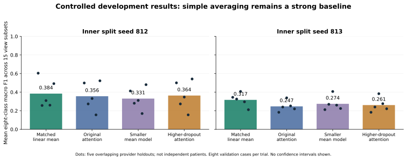

MagSet-Histo | Professor evidence reviewMAGSET-HISTO / RESEARCH REVIEW
A reliable prediction from incomplete microscope views
Can a model combine the available views and classify tissue when some zoom levels are missing?
40x100x200x400x→8 subtype scores
MagSet-Histo · Evidence and next decision · Prepared November 12, 2026
Progress package for Professor Dong. November 18 is an internal preparation target; meeting unconfirmed. No completed novel-method claim.
MAGSET-HISTO / RESEARCH REVIEW
What we built, and what the counts mean
6Original files reviewed
7,909BreakHis images checked
175Development configurations
31Distinct validation provider cases
We built the experiment machinery and measured strong simple controls. Runs, fields, and mask combinations do not create new patients.
Frozen Phikon / ImageNet encoders · all 15 missing-view subsets · saved scores and provenance · six critiques from three agents in two rounds.
MAGSET-HISTO / RESEARCH REVIEW
The simple baseline is still hard to beat

Matched cases, feature caches, and normalization. Dots are overlapping provider holdouts. These selected validation averages are not final test estimates or significance claims.
MAGSET-HISTO / RESEARCH REVIEW
Three findings changed the plan
Identity uncertainty
Provider cases and numeric stems differ. Strict class-covered three-way stem splitting is infeasible for adenosis.
Global reuse
All 82 cases have entered fitting or validation somewhere. No outer-role predictions were scored, but there is no globally pristine BreakHis cohort.
Pretraining overlap
Phikon used TCGA-source data. TCGA is a secondary task, not clean external breast validation.
Trusted repair: all 175 saved sets match actual labels and regenerated split membership. These checks do not resolve clinical identity.
MAGSET-HISTO / RESEARCH REVIEW
Reserve confirmation patients before new training
80 fit16 dev32 sealed
Same 16 classes
5 fit +1 dev +2 sealed patients per class. Fixed hash ordering; no salt search.
Fixed 4 resolutions
0.25 /0.5 /1.0 /2.0mpp. Six incomplete cases remain in fit only.
Preparation only
Frozen ImageNet features are allowed for every role. No classifier fitting or reserved-patient scoring yet.
A new supervised quarantine, not source-protocol reproduction. Small dev/test sample sizes remain a limitation. Phikon is overlap-sensitive.
MAGSET-HISTO / RESEARCH REVIEW
A small agreement correction: hypothesis only
Keep the mean baseline. Add a compact summary of which field clues agree across available views.
Mean + availability+Fixed 32D agreement contrast→Regularized linear head
The original mean equals matched plus unmatched mass. Preserving both branches alone is not new information or proof of novelty.
Decisive controls: duplicated mean · within-bag variation · random partition · simple cross-view affinity. OT is optional only after these controls.
MAGSET-HISTO / RESEARCH REVIEW
What would justify continuing?
Continue
Improvement exceeds the strongest mean and same-dimension controls under a fixed valid protocol, with all outcomes retained.
Reconsider
Random/duplicate controls explain the gain, grouping changes remove it, or another task contradicts the effect.
Final confirmation
Freeze method and metrics before accessing the 32 reserved patients. Preserve patient dependence across 15 subsets.
The next milestone is a defensible go/no-go decision. A new name, extra modules, or more runs does not establish a contribution.
MAGSET-HISTO / RESEARCH REVIEW
Plan and questions for Professor Dong
- Now: trusted audit, critics, registered quarantine and this packet.
- Nov 13-14: feature-readiness checks and a minimal fixed native baseline plan.
- Nov 15-17: candidate correctness, decisive control, failures and limitations.
- Nov 18 target: review the evidence and choose the scientific direction.
Decisions: case-identity policy · method vs benchmark contribution · independent breast-data access · final evidence/venue scope.
No BRACS approval yet. No final test result, clinical generalization, or submission-ready novel paper. See PROFESSOR_BRIEF.md and the six linked review files for evidence and primary sources.